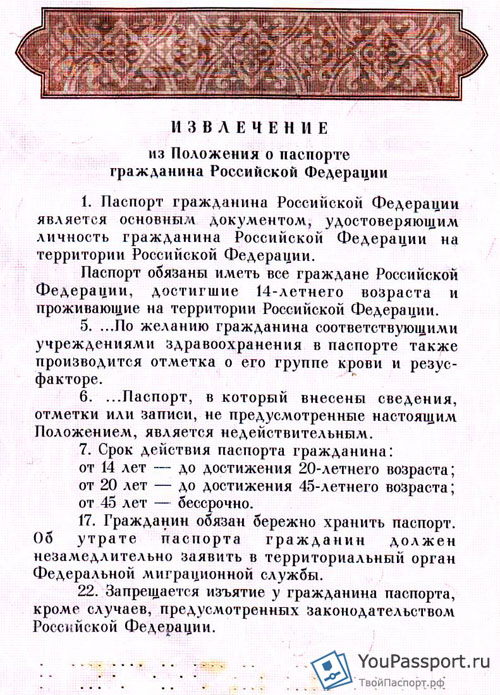

Бесплатные юридические консультации и помощь в получении паспорта, загранпаспорта,РВП, вида на жмтельство, гражданства РФ
Замена паспорта РФ - во сколько лет меняют паспорт в России, сроки действия российских паспортов. Документы для замены.
В данной статье мы затронем важный вопрос, касающийся обмена паспорта. Когда по достижению четырнадцати лет мы впервые получаем документ, который удостоверяет нашу личность, с оформлением нам помогают родители. В 20 лет молодежь становится уже взрослыми людьми, и обменом они занимаются сами, вот только не все знают, какие для этого документы нужны. Именно поэтому мы решили подробно описать порядок и правила смены паспорта. Наверняка среди нас есть люди, которые не знают или не помнят когда им нужно менять паспорт. Для этого в паспорте на самой последней, двадцатой странице, есть памятка, которая извлечена из Положения о паспорте гражданина Российской Федерации, в которой указано, во сколько лет меняют паспорт РФ в России. Рассмотрим их подробнее.
Итак, как показано на фото, впервые мы получаем паспорт по достижению 14-летнего возраста. Именно с этого момента мы можем начинать официально работать.
Как только исполняется 20 лет, необходимо собирать документы на замену.
Следующий обмен производят не так быстро как предыдущий, а спустя 25 лет, то есть в возрасте 45 лет. И на этом данная цепочка прерывается, так как паспорт, выданный в этом возрасте, является бессрочным.
Когда меняют паспорт РФ в России
Не только возраст может являться причиной обмена паспорта. Есть еще ряд причин, по которым замена документа является обязательным условием. Рассмотрим их всех по порядку.
- Смена фамилии и других инициалов, а так же сведения о месте и дате рождения. Сюда входит смена фамилии после замужества.
- Смена пола.
- При порче или изношенности паспорта (порвалась страница, намок паспорт и т.д)
- При обнаружении каких-либо ошибок в документе.
- При изменении внешности владельца паспорта (после пластической операции или серьезной аварии, например).
- Замена паспорта гражданина СССР.
Как только мы сталкиваемся с трудностями, мы теряемся. В данной ситуации мы расскажем вам, как и где менять паспорт.
Обмен и получение паспорта производиться в территориальном подразделении (ФМС) либо в многофункциональном центре (МФЦ), которые предоставляют государственные и муниципальные услуги, по месту жительства, по месту пребывания или по месту обращения. Такие организации есть в каждом районе Москвы и других регионах страны. Кроме того, для более молодого контингента людей и для тех кто дружит с интернетом, есть возможность оформить замену паспорта через единый портал Госуслуг, что позволит сэкономить время на сдачу документов.
Сроки изготовления и замены паспорта гражданина Российской Федерации
Сроки замены паспорта, вне зависимости от того как вы подаете документы, (дистанционно или очно) зависят от места подачи документов. Если подавать по месту жительства, то срок выдачи паспорта гражданина РФ, составляет 10-14 дней, это так же касается и восстановления паспорта при утрате (хищении) документа. Если же подача бумаг производится не по месту жительства, то сроки обмена паспорта будут составлять 2 месяца. Обратите внимание, что это период после подачи документов, а на их сборы вы потратите еще около одной-двух недель.
Сроки действия паспорта гражданина РФ
Согласно Положению о паспорте гражданина Российской Федерации от 08.07.1997 года № 828 , установлены следующие сроки действия российского паспортов:
- От 14 до 20 лет (6 лет срок действия);
- От 20 до 45 лет (25 лет срок действия);
- От 45 лет - бессрочно, замена не требуется;
Военнослужащим, которые проходят военную службу по призыву, паспорта выдаются после окончания установленного срока службы.
В каком возрасте меняют паспорт в России
Исходя из вышесказанного можно понять, что замена российского паспорта по возрасту производиться в 20 и в 45 лет. То есть, как только у вас наступит день рождения, спустя пару дней необходимо собирать все нужные документы, так как это не быстрый процесс и отдавать их на обмен. Если у вас будет просроченный паспорт, то на основании части 1 статьи 19.15 КоАП РФ будет наложен административный штраф в размере от 2000 до 3000 рублей Для жителей Москвы и Санкт-Петербурга штраф будет наложен на основании части 2 статьи 19.15 КоАП РФ.
Бытует мнение, что паспорт остается действительным еще 30 дней после дня рождения или до следующего года, то есть до 21 и 46 лет. Это неправда. Документ становится просроченным сразу в день вашего рождения, а затем у вас будет в запасе месяц, чтобы собрать и подать документы.
Можно ли не менять сразу паспорт?
Военнослужащие, которые проходят срочную службу, могут не переживать, если срок обмена паспорта наступил во время службы. Но как только вы вернетесь из армии, в течение 30 дней необходимо подать документы на обмен.
Если вам было выписано постановление о наложении штрафа, то его можно обжаловать в течение 10 дней, представив документальное доказательство уважительной причины, например, были заграницей или в лечебном санатории.
Срочная замена паспорта РФ
Как быстро поменять паспорт РФ? Данный вопрос интересует многих современных людей. Официальные сроки по замене составляют от 10 дней до 2 месяцев, в зависимости от того, где вы подаете документы (по месту жительства или нет). Не официально можно сделать паспорт за 3-5 дней через людей, которые помогают это организовать. Стоимость срочной замены российского паспорта от 4500 до 6000 рублей, в зависимости от региона страны, в котором вы обращаетесь за помощью. Деятельность такая зачастую нелегальна, поэтому обращаться к таким помощникам не стоит.
Так же стоит отметить, что «скорая» выдача, является нарушением установленного порядка, а значит, в соответствии с пунктом 7 Постановления правительства РФ от 08.07.1997 года № 828, данный документ является недействительным и подлежит изъятию органами внутренних дел, а так же ФМС и ее территориальным органом.
Какие документы нужны для замены российского паспорта
Замена такого важного документа является не совсем быстрым процессом, а это значит, что вам придется отстоять не одну очередь и потратить не один час, чтобы получить все необходимые бумаги. Перечень документов для смены паспорта является для всех возрастов идентичным. Но мы представим вам исчерпывающий список, который необходим не только для обмена, но и для первичного получения. Чтобы поменять паспорт гражданина РФ, необходимы следующие документы:
- Паспорт, который в настоящее время находится у вас, подлежащий замене;
- Заявление о выдаче или замене паспорта по форме 1П, которое заполняется от руки или машинописным способом. Как правило существуют специальные отделения при ФМС, где печатают данный документ.
- Свидетельство о рождении, выданное территориальным отделением ЗАГСа. В том случае, если вы его потеряли или испортили, то необходимо получить дубликат, а это в свою очередь занимает несколько дней.
- Две личные фотографии специального формата, установленным Административным регламентом. Они могут черно-белые или цветные. Фото должно соответствовать возрасту и внешности заявителя.
- Документы, которые необходимы для проставления обязательных отметок:
- Военный билет;
- Свидетельство о рождении детей в возрасте до 14 лет;
- Свидетельство о регистрации или расторжении брака;
- Документ, подтверждающий регистрацию по месту жительства;
- Квитанция об оплате госпошлины или ее реквизиты.
- При обращении за гражданством, необходимо представить документ удостоверяющий личность гражданина РФ за пределами Российской Федерации.
- Те, кто приобрел гражданство на территории РФ, обязаны представить национальный документ, удостоверяющий личность.
- Документы на иностранном языке, должны быть в обязательном порядке нотариально переведены и удостоверены в соответствии с законом.
Мы вам предоставили общий список того, что нужно для замены (обмена) паспорта. Если вас интерисует замена паспорта в 20 лет или в 45 лет, то читайте статьи по ссылкам.
Замена паспорта СССР на паспорт РФ
Не могу представить на сегодняшний день хоть одного человека без паспорта гражданина Российской Федерации. Куда не глянешь, везде требуют его и ни разу не видел, чтобы человек доставал паспорт СССР. Но наверняка найдутся граждане, у которых он еще имеется. Когда обмен паспорта СССР на паспорт РФ был особо популярен, большинство людей задавалось вопросом как это сделать. Сегодня возможности интернета безграничны, поэтому мы постараемся очень подробно описать процесс замены на нашем сайте, чтобы вы не стояли в долгих очередях и не ездили за десятки километров за уточнением списка документов.
Для лиц моложе 45 лет имеющих паспорт СССР, при достижении возраста 20 лет и 45 лет необходимо производить замену паспорта в установленном порядке. Согласно Постановлению правительства РФ от 24.02.2009 года № 153 срок действия паспорта СССР для определенных категорий паспортов был до 01.01.2009 года.
Если данный паспорт находится у лиц старше 45 лет, документ менять не обязательно, согласно статье 42 ФЗ от 31.05.2002 года «О гражданстве РФ», а так же пункту 3 Указа президента РФ от 13.03.1997 года № 232. Родители, не поменявшие свой паспорт, доставляют своим детям немало проблем, так как этим они ущемляют их права.
Для начала стоит вспомнить и уточнить, проживали ли вы на территории России на момент 6 февраля 1992 года. Если есть такие подтвержденные факты, то вы являетесь гражданином РФ и можете смело подавать документы на обмен паспорта.
При обращении в ФМС необходимо иметь при себе 3 цветных или черно-белых фотографий установленного регламентом формата, заявление по форме 1П, оплаченную госпошлину (квитанция или реквизиты), справку о регистрации по месту жительства, а так же сам паспорт.
Для дополнительных отметок необходимо представить следующие документы: свидетельство о рождении детей возрастом до 14 лет, свидетельство о заключении или расторжении брака, военный билет, справка о том, что вы зарегистрированы. Если было изменено имя, отчество или дата рождения, то необходимы документы подтверждающий данный факт.
Если вы не проживали на территории РФ на момент 6 февраля 1992 года, то вам придется при помощи сотрудников ФМС определять, являетесь ли вы лицом без гражданства или подданным другого государства. Затем необходимо оформить гражданство РФ.
Для оформления гражданства, возможно, потребуются дополнительные документы, которые вы в свою очередь обязаны предоставить. После успешного оформления, вам выдадут паспорт гражданина Российской Федерации.
Дополнительные элементы
С учетом интересов граждан, временных и климатических условий, а также особенностей административно-территориального деления субъекта Российской Федерации, допускается изменение часов приема граждан руководителем территориального органа либо подразделения, но при этом прием должен быть организован таким образом, чтобы исключить образование очередей.
При резком увеличении количества обращений граждан по вопросу оформления паспорта по решению руководителя территориального органа либо подразделения продолжительность времени приема может быть увеличена, но не должна превышать пределы рабочего дня.
Время предоставления перерыва для отдыха и питания сотрудников устанавливается с 13.00 до 13.45.
(абзац введен Приказом ФМС России от 02.02.2015 N 21)
15. Часы работы сотрудников устанавливаются согласно внутреннему и служебному распорядку соответствующего подразделения. Руководитель территориального органа, подразделения в зависимости от ситуации может перераспределять в течение дня обязанности между сотрудниками.
| Реквизиты для оплаты госпошлины на выдачу/замену паспорта для города Москва: | Реквизиты для оплаты госпошлины на выдачу/замену паспорта для Санкт–Петербурга и области: |
|---|---|
| УФК по г. Москве (УФМС России по г.Москве) ИНН 7706603405 Код ОКАТО: 45286596000 Р/счет 40101810800000010041 банк получатель: Отделении № 1 ГТУ Банка России, г.Москва БИК 044583001 КПП 770601001 КБК 19210807100011000110 КБК (выдача взамен утраченного или пришедшего в негодность) 192 1 08 07100 01 0035 110 |
УФК по г. Санкт-Петербургу (Управление Федеральной миграционной службы по г. Санкт-Петербургу и Ленинградской области) ИНН 7841326469 КПП 784101001 БИК 044030001 р/с 40101810200000010001 банка получатель: Северо-Западное ГУ Банка России г. Санкт-Петербург КБК – 192 1 08 07100 01 0034 110 КБК (выдача взамен утраченного или пришедшего в негодность) 192 1 08 07100 01 0035 110 |